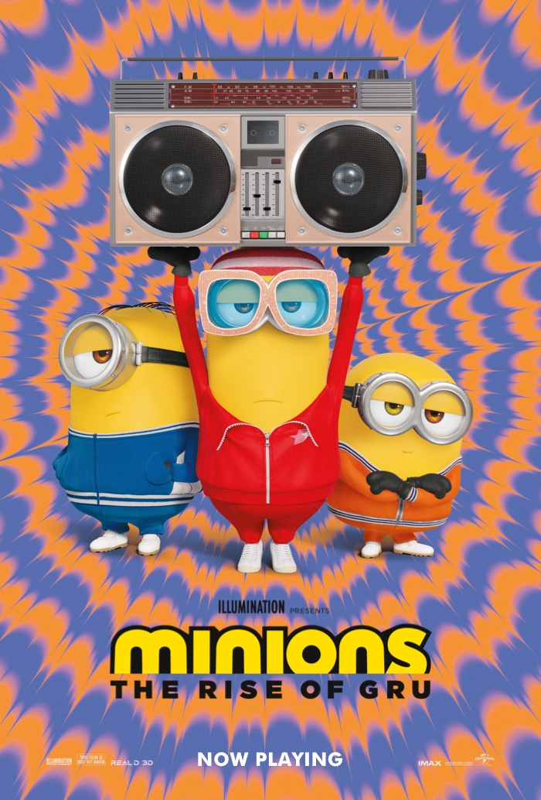

This summer, from the biggest global animated franchise in history, comes the origin story of how the world’s greatest supervillain first met his iconic Minions, forged cinema’s most despicable crew and faced off against the most unstoppable criminal force ever assembled in Minions: The Rise of Gru.
Long before he becomes the master of evil, Gru (Oscar® nominee Steve Carell) is just a 12-year-old boy in 1970s suburbia, plotting to take over the world from his basement. It’s not going particularly well. When Gru crosses paths with the Minions, including Kevin, Stuart, Bob, and Otto—a new Minion sporting braces and a desperate need to please—this unexpected family joins forces. Together, they build their first lair, design their first weapons, and strive to execute their first missions.
When the infamous supervillain supergroup, the Vicious 6, oust their leader—legendary martial arts fighter Wild Knuckles (Oscar® winner Alan Arkin)— Gru, their most devoted fanboy, interviews to become their newest member. The Vicious 6 is not impressed by the diminutive, wannabe villain, but then Gru outsmarts (and enrages) them, and he suddenly finds himself the mortal enemy of the apex of evil. With Gru on the run, the Minions attempt to master the art of kung fu to help save him, and Gru discovers that even bad guys need a little help from their friends.
Featuring more spectacular action than any film in Illumination history and packed with the franchise’s signature subversive humor, Minions: The Rise of Gru stars a thrilling new cast, including, the Vicious 6: Taraji P. Henson as cool and confident leader Belle Bottom, whose chain belt doubles as a lethal disco-ball mace; Jean-Claude Van Damme as the nihilistic Jean Clawed, who’s armed (literally) with a giant robotic claw; Lucy Lawless as Nunchuck, whose traditional nun’s habit hides her deadly nun-chucks; Dolph Lundgren as Swedish roller-skate champion Svengeance, who dispenses his enemies with spin kicks from his spiked skates; and Danny Trejo as Stronghold, whose giant iron hands are both a menace to others and a burden to him.
The film also stars Russell Brand as Young Dr. Nefario, an aspiring mad scientist, Michelle Yeoh as Master Chow, an acupuncturist with mad kung fu skills, and Oscar® winner Julie Andrews as Gru’s maddeningly self-absorbed mom.
Steered by the franchise’s original creators, Minions: The Rise of Gru is produced by visionary Illumination founder and CEO Chris Meledandri and his longtime collaborators Janet Healy and Chris Renaud. The film is directed by returning franchise filmmaker Kyle Balda (Despicable Me 3, Minions), co-directed by Brad Ableson (The Simpsons) and Jonathan del Val (The Secret Life of Pets films), and features the iconic voice of Pierre Coffin as the Minions and a killer ’70s soundtrack courtesy of legendary Grammy-winning music producer Jack Antonoff.